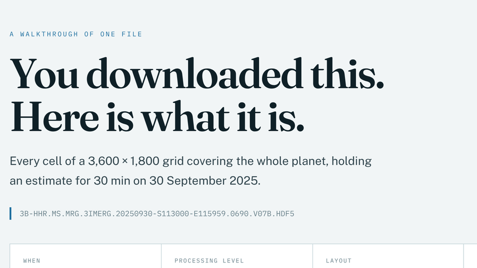
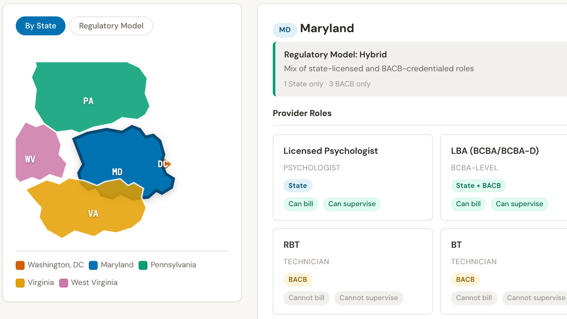
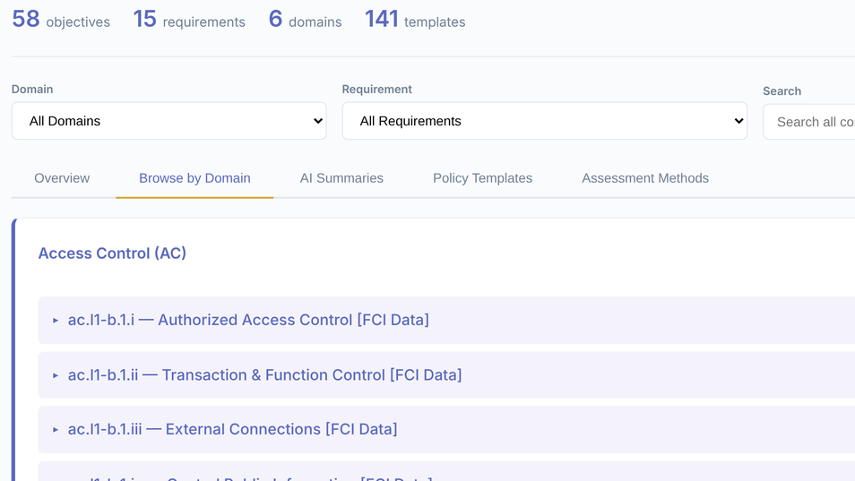
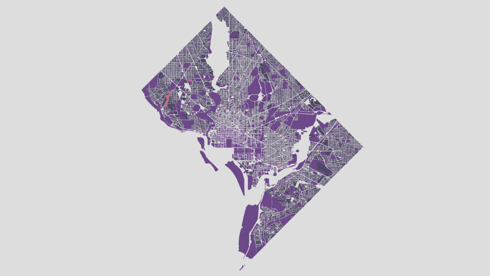

JJW Insights Analytics builds pipelines, dashboards, and data systems for small agencies, nonprofits, and mission-driven teams. We name the problem, fix it, prove it worked — and leave you with something your own staff can run.
See the WorkRight-sized consulting for teams doing essential work without a data department behind them.
No sprawling methodologies. No two-hour meetings over a spelling issue. We name the problem, build the fix, and prove it works — so you can get back to the work that matters.
Interactive, self-contained analytics tools built to surface the insights your stakeholders actually need — not vanity metrics wrapped in a pretty slide deck.
Every deliverable ships with the documentation, SOPs, and training your team needs to run it without us. That discipline comes from 10+ years across EPA, USGS, DHS, and FEMA — where handoff isn't optional.
Interactive dashboards and data products — built to be used, not just presented.

A Python engine that turns a NASA satellite data file into a self-explaining, interactive guide — filename decoding, processing-level ladder, GIS pitfalls — with every claim marked as evidence or inference.
View project →
A multi-state reference tool mapping provider roles, reimbursement rates, qualification pathways, and regulatory models for Applied Behavior Analysis Medicaid coverage across the Mid-Atlantic region.
View project →
An interactive compliance tool for navigating Cybersecurity Maturity Model Certification requirements — 58 objectives, 15 requirements, 6 domains — with AI summaries and policy templates.
View project →
An interactive Leaflet-based choropleth map of Washington, DC property tax parameters — annual tax, assessment value, and effective tax rates — at the parcel level.
View project →A direct conversation about what's broken, what it takes to fix it, and what that costs — sized for your team and your budget.
Start a Conversation View Capabilities